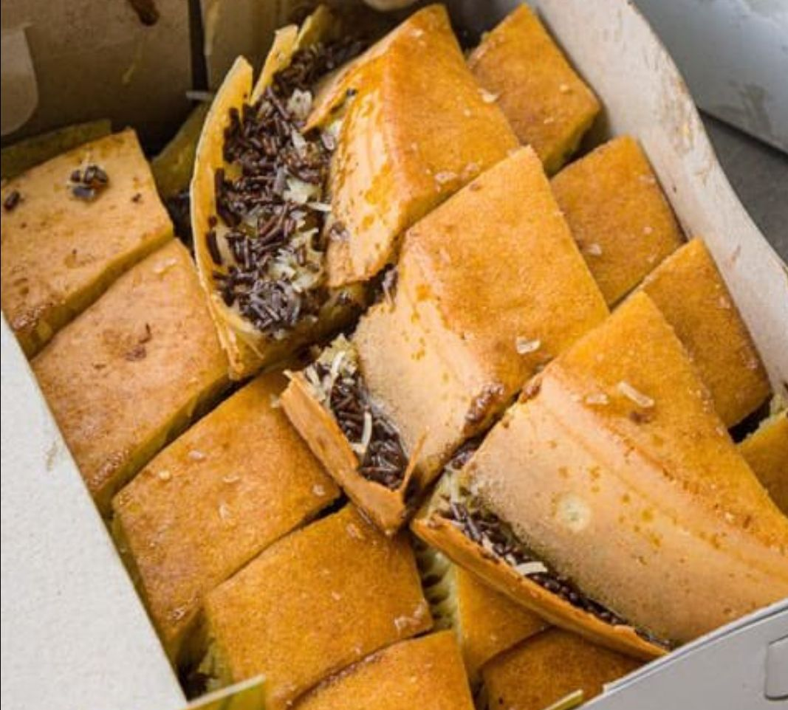

Martabak
Martabak merupakan sajian yang biasa ditemukan di Arab Saudi, Yaman, Indonesia, Malaysia, Singapura, dan Brunei. Bergantung pada lokasinya, nama, dan komposisi martabak dapat bervariasi. Martabak ini juga merupakan makanan ringan yang sangat manis sekali untuk dimakan sehingga banyak sekali orang yang makan tersebut sangat cukup kenyang.